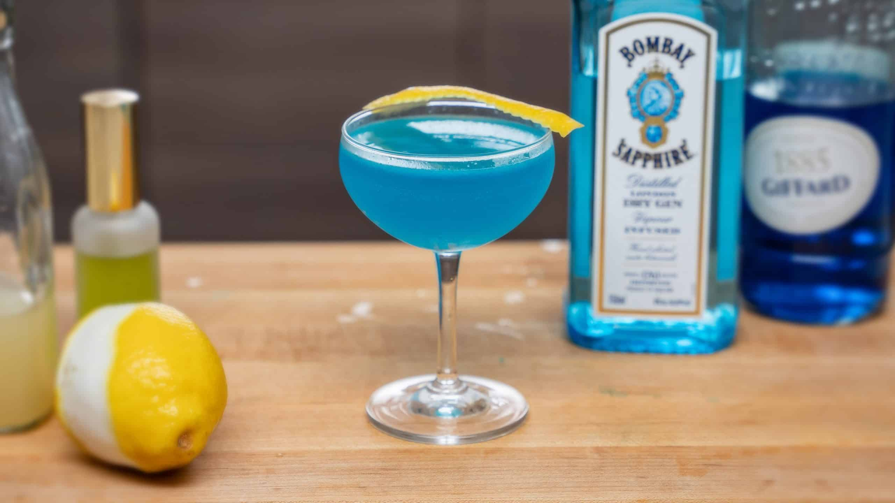

A Modern Twist On An Old Classic
Ingreidents
- 1 oz Gin
- 1 oz Lillet Blanc
- 1 oz Blue Curaçao
- .25 oz Lucid Absinthe
- 1 oz Lemon Juice
Directions
- Rinse coup glass with Absinthe then pour out remainder.
- Combine all other ingrediants in shaker with ice.
- Shake for at least 15 seconds.
- Fine strain into coup glass.
- Express lemon twist over drink then set on the rim.